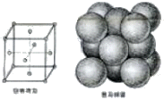

침투비파괴검사기능사 (2009-09-27 기출문제)
1과목: 침투탐상시험법(대략구분)
1. 다음 중 자분탐상시험과 관련한 용어의 설명으로 옳은 것은?
- “자분”이란 여러 가지 색을 지니고 있는 비자성체의 미립자이다.
- “자화”란 비자성체의 시험체에 자속을 흐르게 하는 작업을 말한다.
- “자분의 적용”이란 자분을 시험체 내에 침투시키는 작업을 말한다.
- “관찰”이란 결함부에 형성된 자분모양을 찾아내는 작업을 말한다.
(정답률: 53%)

2. 다음 각종 비파괴검사의 특징에 대한 설명으로 옳은 것은?
- 와전류탐상시험은 도금 층의 두께나 표층부의 결함 검출에 적용할 수 있다.
- 방사선투과시험은 초음파탐상시험보다 결함의 깊이측정에 대한 검출 능력이 우수하다.
- 미세 표면결함의 검출에 침투탐상시험이 자분 탐상시험에 비해 검출능력이 우수하나 강자성체 재료에만 적용이 가능하다.
- 자분탐상시험은 표면이 열린 결함만을 대상으로 하면, 침투탐상시험은 표면 바로 밑의 열려 있지 않는 결함이 가능하다.
(정답률: 67%)
3. 다음 중 자극에 관련된 설명으로 옳지 않은 것은?
- 물질 내 자구는 자극을 갖고 있다.
- 같은 극끼리 반발하는 힘을 척력이라고 한다.
- 다른 극끼리 잡아 당기는 힘을 중력이라고 한다
- 자력선은 자석의 내부에서 S극에서 N극으로 이동한다.
(정답률: 53%)
4. 다음 중 기포누설검사의 특징에 대한 설명으로 옳은 것은?
- 누설 위치의 판별이 빠르다.
- 경제적이나 안전성에는 문제가 있다.
- 기술의 숙련이나 경험을 크게 필요로 한다.
- 프로브(탐침)나 스니퍼(탐지기)가 반드시 필요하다.
(정답률: 61%)
5. 다음 중 침투탐상시험에서 형광침투액을 사용하는 것보다 염색침투액을 사용하는 것이 유리한 경우로 옳은 것은?
- 어두운 장소에 적용할 때
- 자연광을 이용하는 장소일 때
- 수도시설이 설치되는 장소일 때
- 전원이 필요한 장소에서 작업할 때
(정답률: 71%)
6. 다음 중 침투탐상시험에서 후유화성 침투액을 사용하는 경우 유화제는 언제 적용하는 것이 적합한가?
- 침투시간 적용 직전
- 침투시간 경과 직후
- 침투액의 건조처리 직후
- 침투액의 현상처리 직후
(정답률: 60%)
7. 와전류탐상시험에 대한 설명으로 옳은 것은?
- 자성인 시험체, 베크라이트난 목재가 적용 대상이다.
- 전자유도시험이라고도 하며 적용 범위는 좁으나 결함깊이와 형태의 측정에 이용된다.
- 시험체 와전류 흐름이나 속도가 변하는 것을 검출하여 결함의 크기, 두께 등을 측정하는 것이다.
- 기전력에 의해 시험체 중에 발생하는 소용돌이 전류로 결함이나 재질 등의 영향에 의한 변화를 측정한다.
(정답률: 35%)
8. 다음 비파괴검사법 중 시험체 내부 깊은 결함을 검출할 수 있는 것으로만 짝지어진 것은?
- 자분탐상시험, 침투탐상시험
- 초음파탐상시험, 자분탐상시험
- 침투탐상시험, 방사선투과시험
- 방사선투과시험, 초음파탐상시험
(정답률: 91%)
9. 다음 중 방사선투과시험과 초음파탐상시험에 대한 비교 설명으로 틀린 것은?
- 방사선투과시험은 시험체 두께에 영향을 많이 받으며, 초음파탐상시험은 시험체 조직 크기에 영향을 받는다.
- 방사선투과시험은 방사선안전관리가 필요하고, 초음파탐상시험은 방사선안전관리가 필요하지 않다.
- 방사선투과시험은 촬영 후 현상과정을 거쳐야 판독 가능하고, 초음파탐상시험은 검사 중 판독이 가능하다.
- 방사선투과시험은 결함의 3차원적 위치 확인이 가능하고, 초음파탐상시험은 2차원적 위치 확인만 가능하다.
(정답률: 72%)
10. 다음 누설검사법 중 미세한 누설 검출율이 가장 높은 것은?
- 기포누설검사법
- 헬륨누설검사법
- 할로겐누설검사법
- 암모니아누설검사법
(정답률: 47%)
11. 방사선투과시험에서 투과도계를 사용하는 주 목적?
- 식별도를 측정하기 위함이다.
- 필름 입상성을 측정하기 위함이다.
- 필름 콘트라스트를 측정하기 위함이다.
- 피사체 콘트라스트를 측정하기 위함이다.
(정답률: 32%)
12. 와전류탐상시험 기기에서 게인(Gain)이란 조정 장치의 역할로 옳은 것은?
- 위상(phase) 조정
- 평형(balance) 조정
- 감도(sensitivity) 조정
- 진동수(frequency) 조정
(정답률: 57%)
13. 다음 중 시험체의 표면 및 표면직하 결함을 검출 하기에 적합한 비파괴검사법만으로 나열된 것은?
- 방사선투과시험, 누설검사
- 초음파탐상시험, 침투탐상시험
- 자분탐상시험, 와전류탐상시험
- 중성자투과시험, 초음파탐상시험
(정답률: 66%)
14. 다음 중 크롬 - 올리브덴 합금강 재료를 절삭하고 표면을 매끈하게 연삭하였을 때 이 공정에서 발생한 표면 결함검출에 적합한 비파괴검사법의 조합만으로 옳게 나타낸 것은?
- 초음파탐상검사와 누설검사
- 자분탐상검사와 침투탐상검사
- 침투탐상검사와 방사선투과검사
- 방사선투과검사와 초음파탐상검사
(정답률: 81%)
15. 수세성 염색침투액과 습식현상법을 조합하여 탐상할 경우의 탐상순서로 옳은 것은?
- 전처리→침투처리→세척처리→현상처리→건조처리
- 전처리→침투처리→세척처리→건조처리→현상처리
- 전처리→세척처리→건조처리→침투처리→현상처리
- 전처리→건조처리→침투처리→현상처리→세척처리
(정답률: 55%)
16. 다음 중 침투액의 침투시간에 크게 영향을 미치는 인자와 거리가 먼 것은?
- 침투액의 종류
- 시험체의 무게
- 시험체의 재질
- 예측되는 결함의 종류
(정답률: 87%)
17. 다음 침투탐상시험 중 거친 표면에 있는 결함을 탐상할 때 가장 적합한 방법은?
- 유화제법에 의한 형광침투탐상시험
- 용제법에 의한 형광침투탐상시험
- 수세법에 의한 형광침투탐상시험
- 유화제법에 의한 염색침투탐상시험
(정답률: 43%)
18. 후유화성 침투탐상시험에 사용되는 가장 적합한 세척방법은?
- 물 세척
- 솔벤트 세척
- 알칼리 세척
- 초음파 세척
(정답률: 74%)
19. 후유화성 침투탐상시험에서 유화제를 사용하는 주된 목적으로 옳은 것은?
- 의사지시를 제거시켜 준다.
- 현상제의 흡출작용을 도와준다.
- 침투제의 침투작용을 도와준다.
- 물로 세척이 용이하도록 도와준다.
(정답률: 56%)
20. 다음 결함 중 통상적으로 원형의 지시로서 짧은 침투시간이 필요한 것은?
- 단조 겹침
- 미세 균열
- 표면 기공
- 열처리 균열
(정답률: 55%)
2과목: 침투탐상관련규격(대략구분)
21. 형광침투탐상 시험장치 중에서 자외선 조사장치가 반드시 필요한 곳으로만 나열된 것은?
- 세척대, 검사대
- 세척대, 현상탱크
- 침투탱크, 검사대
- 현상탱크, 침투탱크
(정답률: 18%)
22. 다음 중 후유화성 염색침투탐상시험과 무관한 재료 또는 기구는?
- 유화제
- 분사기
- 현상제
- 자외선등
(정답률: 78%)
23. 침투시간이 경과한 후 과잉의 수세성 침투액을 제거하는 가장 바람직한 방법은?
- 물과 함께 솔질한다.
- 용제를 이용하여 세척한다.
- 물과 깨끗한 헝겊으로 닦는다.
- 물 스프레이를 이용하여 세척한다.
(정답률: 38%)
24. 다음 중 금속의 균열을 침투탐상시험할 때 검사 결과에 가장 큰 영향을 주는 것은?
- 검사물의 경도
- 침투제의 색깔
- 검사물의 열전도도
- 검사물의 표면조건
(정답률: 68%)
25. 다음 중 침적법으로 침투액을 적용한 후 다음 공정을 쉽고 안전하게 하기 위하여 반드시 필요한 처리는?
- 분무처리
- 솔질처리
- 배액처리
- 유화처리
(정답률: 38%)
26. 항공 우주용 기기의 침투탐상검사방법(KS W 0914)에서 정치식 형광침투 탐상장치를 사용하는 경우 검사장소의 점검에 관한 내용 중 틀린 것은?
- 주 1회, 청정도에 대하여 점검하여야 한다.
- 배경의 백색광은 20㏓(㏐/ft2) 이하이어야 한다.
- 건사장소는 난잡하거나 형광 오염이 없어야 한다.
- 검사 장소에는 자외선조사장치가 수세장소에 1개, 건조 장소에 1개 등 최소한 2개 이상이 설치되어야 한다.
(정답률: 26%)
27. 침투탐상 시험방법 및 침투지시모양의 분류(KS B 0816)에 규정된 탐상제와 점검 내용의 조합으로 옳은 것은?
- 침투제를 적용한 바로 직후
- 현상제를 적용한 후 7분 이내
- 현상제를 적용한 후 7~60분 사이
- 침투제를 적용하고 지시가 형성된 직후
(정답률: 60%)
28. 침투탐상 시험방법 및 침투지시모양의 분류(KS B 0816)에 규정된 탐상제와 점검 내용의 조합으로 옳은 것은?
- 침투액 : 부착상태 검사
- 유화제 : 결함검출능력 검사
- 건식현상제 : 겉모양 검사
- 습식현상제 : 세척성 검사
(정답률: 57%)
29. 침투탐상 시험방법 및 침투지시모양의 분류(KS B 0816)에서 사용 중인 침투액에 대한 점검결과 중 폐기사유에 해당하지 않는 것은?
- 성능시험 결과 색상이 변화됐다고 인정된 때
- 겉모양 검사를 하여 현저한 흐름이나 침전물이 생겼을 때
- 성능시험 결과 결함검출 능력 및 침투지시모양의 휘도가 저하되었을 때
- 겉모양 검사를 한 후 불충분한 재료에 정량의 재료로 보충하여 혼합하였을 때
(정답률: 48%)
30. 침투탐상 시험방법 및 침투지시모양의 분류(KS B 0816)에서 샘플링검사인 경우 합격한 로트의 모든 시험체에 대한 표시방법으로 옳은 것은?
- P 의 기호로 각인 또는 적살색으로 착색
- Ⓟ 의 기호로 각인 또는 황색으로 착색
- 적갈색으로 착색 또는 적갈색 밴드 부착
- 노란색으로 각인 또는 노란색 밴드 부착
(정답률: 75%)
31. 침투탐상 시험방법 및 침투지시모양의 분류(KS B 0816)에 따라 탐상결과가 길이 7㎜, 나비 2㎜ 의 침투지시모양 1개가 관찰되었다면, 이 결함의 분류로 옳은 것은?
- 분산 결함
- 체적 결함
- 선상 결함
- 원형상 결함
(정답률: 64%)
32. 침투탐상 시험방법 및 침투지시모양의 분류(KS B 0816)에서 유화제의 적용 방법으로 권장하고 있지 않은 것은?
- 침지
- 붓기
- 분무
- 붓칠
(정답률: 54%)
33. 항공 우주용 기기의 침투탐상 검사방법(KS W 0914)에 따른 수성(수용성, 수현탁성) 현상제에 대한 설명으로 틀린 것은?
- 수성 현상제는 스프레이, 흘려보내기 또는 침지에 의해 적용하여야 한다.
- 수용성 현상제는 특별한 지시가 없는 한 형광 침투방법에는 적용하지 않는다.
- 수성 현상제의 체류시간은 구성 부품이 건조되고 나서 최소 10분동안 최대 2시간으로 한다
- 수성 현상제는 구성 부품의 수세 후에 적용하거나 또는 구성부품이 건조되고 나서 적용하여도 좋다.
(정답률: 25%)
34. 침투탐상 시험방법 및 침투지시모양의 분류(KS B 0816)에서 시험체의 일부분을 탐상하는 경우, 시험하는 부분의 전처리에 대한 규정으로 옳은 것은?
- 시험부 중신에서 바깥쪽으로 10㎜ 넓은 범위를 깨끗하게 한다.
- 시험부 중심에서 바깥쪽으로 25㎜ 넓은 범위를 깨끗하게 한다.
- 시험하는 부분에서 바깥쪽으로 10㎜ 넓은 범위를 깨끗하게 한다.
- 시험하는 부분에서 바깥쪽으로 25㎜ 넓은 범위를 깨끗하게 한다.
(정답률: 74%)
35. 항공 우주용 기기의 침투탐상 검사방법(KS W 0914)에서 분류하는 침투액계 중“타입Ⅱ”는 무엇을 의미 하는가?
- 형광 침투액 계통
- 염색 침투액 계통
- 복식 침투액 계통
- 특수 침투액 계통
(정답률: 44%)
36. 침투탐상 시험방법 및 침투지시모양의 분류(KS B 0816)에서 A형 대비시험편의 제작을 위한 갈라짐 발생을 위해 가열할 온도범위로 옳은 것은?
- 90℃~125℃
- 250℃~375℃
- 520℃~ 530℃
- 700℃~850℃
(정답률: 49%)
37. 침투탐상 시험방법 및 침투지시모양의 분류(KS B 0816)에서 결함에 대하여 기록할 때 기록의 대상이 아닌 것은?
- 결함의 종류
- 결함의 면적
- 결함의 개수
- 결함의 위치
(정답률: 55%)
38. 침투탐상 시험방법 및 침투지시모양의 분류(KS B 0816)에서 시험 종료후 후처리시 시험품의 표면에 부착되어 있는 현상제를 제거해야 하는 가장 주된 이유는?
- 세척제를 오염시키기 때문에
- 시험체의 마모를 발생시기기 때문에
- 시험체를 부식시킬 우려가 있으므로
- 탐상 후의 후속공정에 영향을 줄 수 있으므로
(정답률: 39%)
39. 배관 용접부의 비파괴시험 방법(KS B 0888)에 따른 침투처리 내용의 설명 중 옳은 것은?
- 침투액의 적용을 위해 침투액조에 침지하였다.
- 시험체 및 침투액의 온도가 3℃ 이하이면 침투 처리를 할 수 없다.
- 침투에 필요한 시간 동안 그 표면을 침투액으로 적셔 두었다.
- 침투시간은 시험체 및 침투액의 온도가 15~50℃ 범위 일 때 3분으로 하였다.
(정답률: 32%)
40. 침투탐상 시험방법 및 침투지시모양의 분류(KS B 0816)에 규정된 형광침투탐상시험에서 암실의 밝기는 몇 ㏓ 이하 여야 하는가?
- 20
- 50
- 100
- 500
(정답률: 74%)
3과목: 금속재료일반 및 용접일반(대략구분)
41. 전자서명(digital signature)의 특징과 거리가 먼 것은?
- 위조 불가성: 서명자 이외에 사람이 어떤 방법으로도 서명을 위조할 수 없어야 한다.
- 인증성: 서명된 메시지가 반드시 메시지의 송신자에 의해 서명된 것인지 확인할 수 있어야 한다.
- 부인봉쇄: 서명자는 자신의 서명에 대해 서명한 사실을 부인할 수 없어야 한다.
- 재사용 가능성: 한번 사용한 서명은 다음에 또 사용할 수 있어야 한다. 즉 복사가 가능해야 한다.
(정답률: 60%)
42. 웹상의 일정공간을 할당하여 자료를 저장할 수 있는 것을 의미하는 것은?
- FTP
- P2P
- Web Hard
- Telnet
(정답률: 70%)
43. 컴퓨터 통신에서 일정 길이의 전송단위 데이터를 송신축 교환기에 기억시켰다가 수신측 주소에 따라 적당한 통신경로를 선택하여 수신축에 전송하는 방식은?
- 회선교환방식(circuit-switched)
- 패킷교환방식(packet-switched)
- 메시지교환방식(message-switched)
- 코드분할방식(code division multiple accessed)
(정답률: 15%)
44. 인터넷에서 주소역할을 하는 이름을 도메인이라 한다. 최상위수준의 도메인과 그에 해당하는 기관명으로 옳은 것은?
- org : 국제기구
- edu : 교육기관
- mil : 웹 관리기관
- gov : 개인회사
(정답률: 50%)
45. 다음 중 컴퓨터의 파일을 압축하는 프로그램이 아닌 것은?
- V3 PRO
- ARJ
- ALZip
- WinZip
(정답률: 56%)
46. 순철의 변태 중 A2변태는 결정구조의 변화 없이 강자성체가 상자성체로 변한다. 이러한 변태를 무엇이라고 하는 가?
- 동소변태
- 자기변태
- 전단변태
- 마텐자이트변태
(정답률: 66%)
47. 다음 그림은 면심입방격자이다. 단위격자에 속해 있는 원자의 수는 몇 개 인가?

- 2
- 3
- 4
- 5
(정답률: 75%)
48. 다음 중 연절 자성재료가 아닌 것은?
- 알니코자석
- Si 강판
- 퍼멀로이
- 센더스트
(정답률: 9%)
49. 미세한 결정립을 가지고 있으며, 어느 응력하에서 파단에 이르기까지 수백 % 이상의 연신율을 나타내는 합금은?
- 제진합금
- 비정질합금
- 형상기억합금
- 초소성합금
(정답률: 48%)
50. 강에 특수원소를 첨가하여 절삭할 때, 칩을 잘게 하고 피삭성을 좋게 하는 원소는?
- Ag, Ni
- Cr, Ni
- Pb, S
- Na, Mo
(정답률: 45%)
51. 현미경 관찰을 위해 철강 시험편을 연마할 때 사용하는 연마제는?
- 산화납
- 산화크롬
- 산화구리
- 유리가루
(정답률: 55%)
52. 티타늄탄화물(TiC)과 Ni 또는 Co 등을 조합한 재료를 만드는데 응용하며, 세라믹과 금속을 결합하고 액상 소결하여 만들어진 절삭 공구로도 사용되는 고경도 재료는?
- 서멧(cermet)
- 인바(inval)
- 두랄루민(duralumin)
- 고속도강(high speed steel)
(정답률: 44%)
53. 재료에 고온강도를 주기 위한 주요 강화 방법이 아닌 것은?
- 연성강화
- 고용강화
- 석출강화
- 입계강화
(정답률: 37%)
54. 애드미럴티 포금(admiralty gun metal)의 주요 성분으로 옳은 것은?
- Mg-Si-Mn
- Al-Pb-Si
- Fe-Ca-Sb
- Cu-Sn-Zn
(정답률: 56%)
55. 다음 중 압입자국으로부터 경도 값을 계산하는 경도계가 아닌 것은?
- 쇼어 경도계
- 브리넬 경도계
- 비커즈 경도계
- 로크웰 경도계
(정답률: 39%)
56. 냉간 가공한 재료를 가열했을 때, 가열 온도가 높아짐에 따라 재료의 변화 과정을 순서대로 바르게 나열한 것은?
- 회복 → 재결정 → 결정립 성장
- 회복 → 결정립 성장 → 재결정
- 재결정 → 회복 → 결정립 성장
- 재결정 → 결정립 성장 → 회복
(정답률: 32%)
57. Fe-C 평형상태도에 대한 설명으로 옳은 것은?
- Fe 의 자기변태점은 768℃ 이다.
- Fe3C 의 자기변태점은 910℃ 이다.
- γ 고용체 + Fe3C 를 펄라이트라 한다.
- α 고용체 + Fe3C 를 레데뷰라이트라 한다.
(정답률: 34%)
58. 용접의 장점이 아닌 것은?
- 제품의 성능과 수명이 향상된다.
- 이음형상을 자유롭게 할 수 있다.
- 기밀, 수밀은 우수하나 이음 효율이 낮다.
- 재료의 두께에 제한이 없다.
(정답률: 38%)
59. 15℃ 15㎏f/cm2 하에서 아세톤 30ℓ가 들어있는 아세틸렌 용기에 용해된 최대 아세틸렌의 양은?
- 3000ℓ
- 4500ℓ
- 6750ℓ
- 11250ℓ
(정답률: 25%)
60. 용접 중 가스를 가장 많이 발생하는 용접봉은?
- E4311
- E4316
- E4324
- E4327
(정답률: 32%)